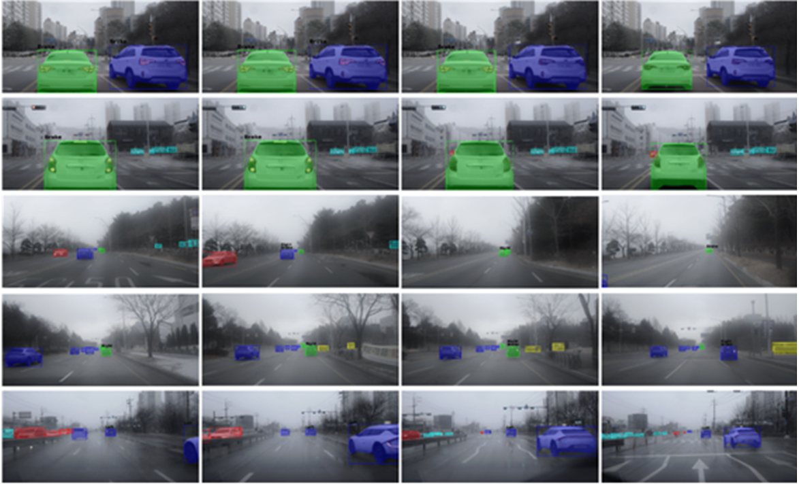

Autonomous Driving AI Challenge 2024 — Vehicle Object & State Recognition

▲ Qualitative results — per-vehicle instance masks across clear, hazy and low-visibility scenes.
Task
Recognize each vehicle and its composite state — class, lane position, and taillight action (multiple can hold at once) — with instance masks.
Model
A shared backbone and pixel decoder feed two heads: the transformer decoder emits class and mask, a parallel complex decoder reuses that mask for lane position and taillight state. Built on Mask2Former + DINOv2 with masked attention (baseline: YOLOv8). mAP 0.73 → 0.75.
Slides
13 slides (Korean) · Open the PDF
Links
Ministry of Science and ICT press release (Korean, 19 Nov 2024) — lists our team as VIP (이정윤) in the vehicle composite-state recognition track.